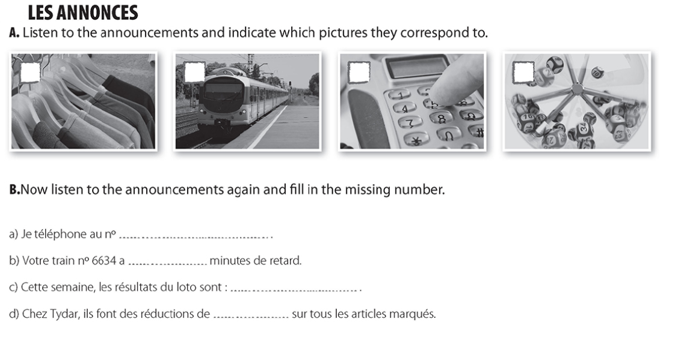
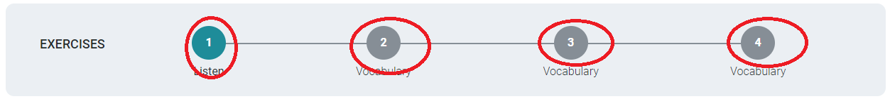

Pratiquez/ Practice the following exercises:
Écoutez la vidéo et répondez aux question/ Listen to the following video and answer these questions:
Comment s'appelle-t-elle? What is her name? Quelle est sa nationalité? What is her nationality? Quel âge a-t-elle? How old is she? Quelle est sa profession? What is her job?
VIDEO
click here to get the correction: correction video presentation
watch the following video and try to identify the vocabulary to greet formally and informally
présentation
1 Cliquez sur le lien /click on the link : compréhension orale 1 Listen to the audio and answer True /Vrai or False/Faux to the 8 questions
2. Écoutez l'audio et répondez aux questions /listen to the audio file and answer the questions:

3. Écoutez l'audio et répondez aux questions /listen to the audio file and answer the questions: VIDEO
Cliquez sur le lien et vous avez 4 exercices (cliquez sur les 4 nombres)/Click on the above link and you have 4 exercises (click on the 4 numbers at the top)

2. Listen to the audio file 3 times and fill in the document by clicking on the link below:
chanson / song